İki yüzey
Sahada mobil, ofiste web
Şoför ve personel telefonu kullanır, yönetici ve koordinatör tarayıcıdan yönetir. İkisi de aynı canlı veriyi görür.
Kontrol ve görünürlük
Operasyonun tamamı cebinde
Hesaplar, hatlar, canlı izleme, yoklama ve duyurular tek uygulamada.


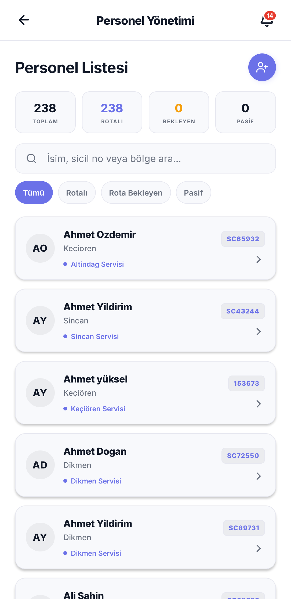
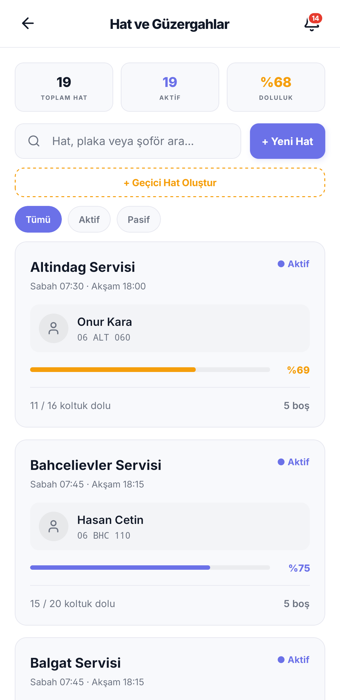
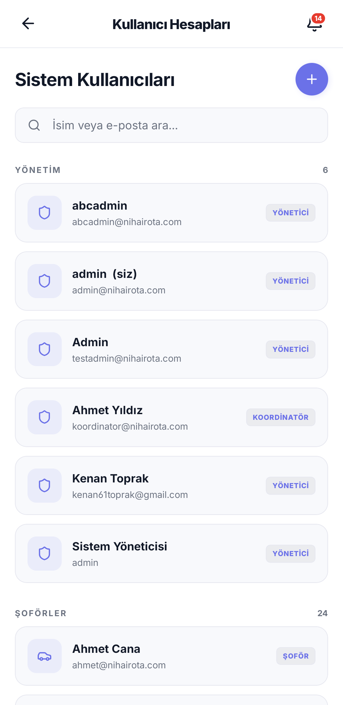
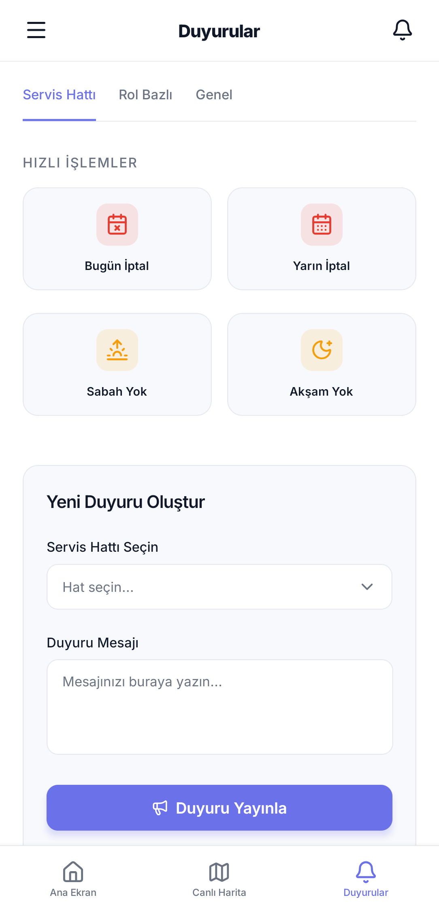
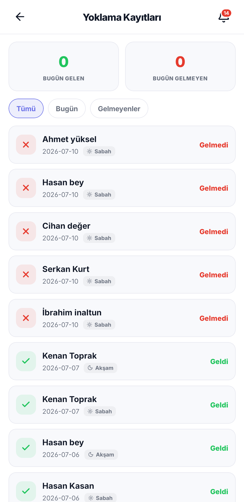
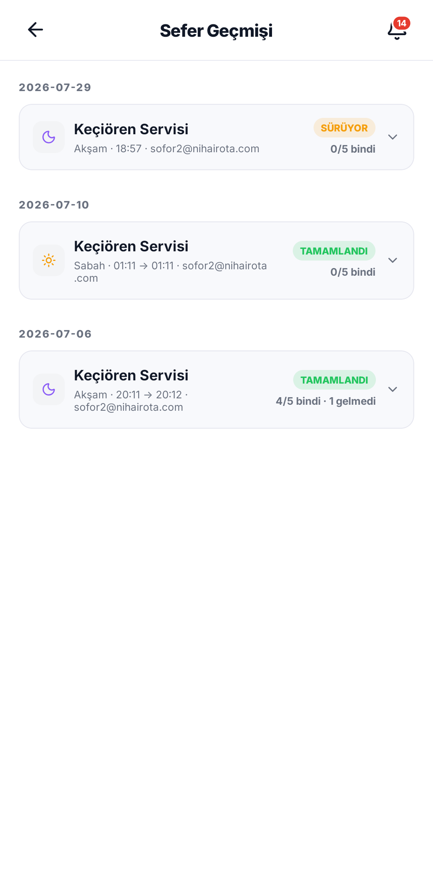
Sahada
Rota, navigasyon ve yoklama
Atanan güzergâhı haritada görür, navigasyonla ilerler, her durakta tek dokunuşla yoklama alır.


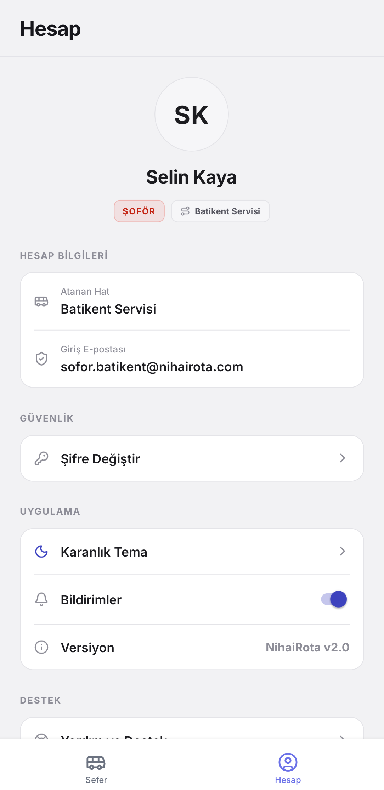
Yolcu deneyimi
Servisim nerede, sıram kaçıncı?
Canlı konum ve alınma sırası anlık görünür; gelmeyeceği günler takvimden bildirilir.

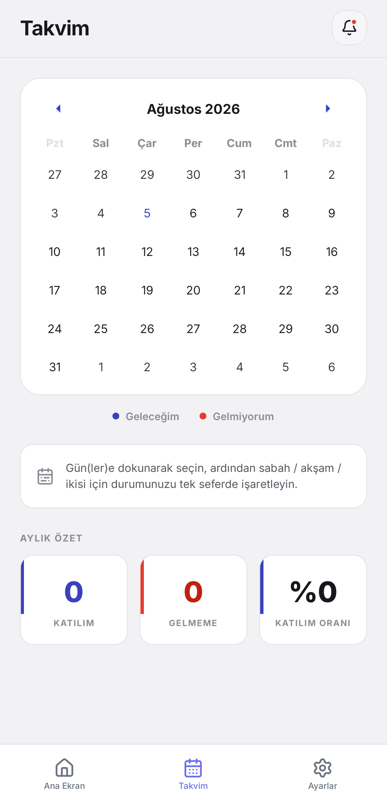
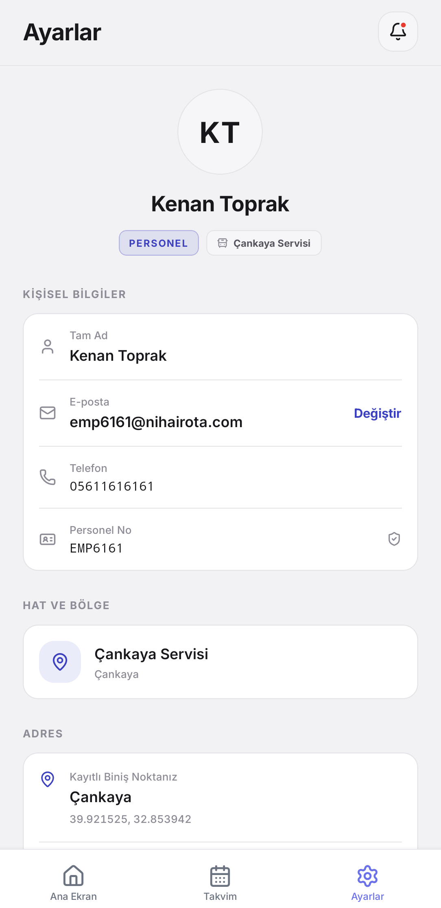
Kayıttan
Bir hattın rotası, canlı
Şoför personeli işaretledikçe duraklar anında güncelleniyor. Uygulamadan doğrudan ekran kaydı.
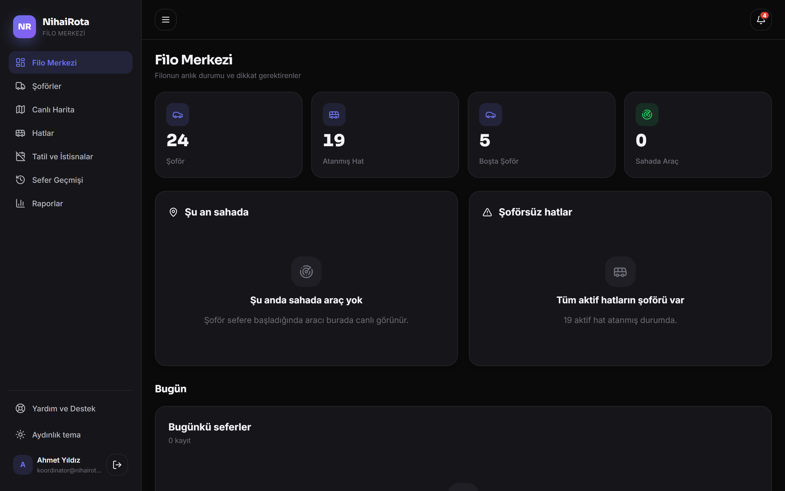
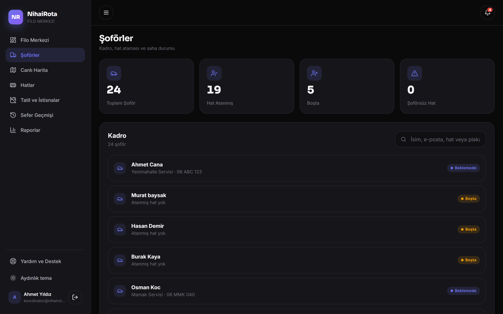
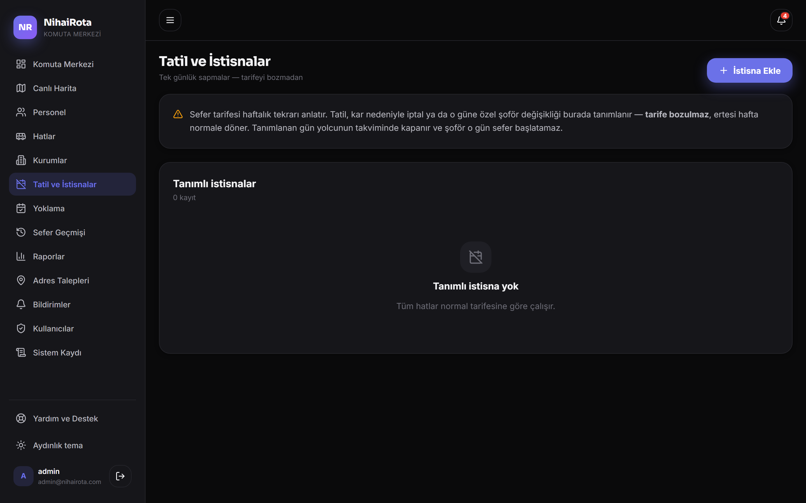
Kurulum gerekmez. Yönetici ve koordinatör hesapları tarayıcıdan oturum açar; mobil uygulamayla aynı canlı veriyi kullanır. Şoförler mobil uygulamayı kullanır.
Giriş Yap Kurum hesabı talep etÖne çıkanlar
Operasyonu canlı tutan çekirdek
Gerçek zamanlı takip
Araçlar ve personel harita üzerinde saniyeler içinde güncellenir.
Akıllı güzergâh
Durak sıralaması otomatik hesaplanır, şoför en verimli rotaya yönlendirilir.
Bindi / gelmedi yoklaması
Her durakta tek dokunuş; doluluk anında güncellenir.
Anlık bildirim
Yaklaşma, gecikme ve duyurular saniyesinde ulaşır.
Çevrimdışı dayanıklılık
Bağlantı kesilse de işaretler saklanır, ağ gelince senkronlanır.
Tatil ve istisnalar
Tatil, iptal ve şoför değişikliği haftalık tarife bozulmadan tanımlanır.
NihaiRota'yı hemen indirin
Android APK hazır. Google Play ve App Store yayınları hazırlanıyor.
Kurulumda istendiğinde bilinmeyen kaynaklardan kuruluma izin verin; kurulumdan sonra bu izni kapatabilirsiniz. APK Vectonis tarafından imzalanmıştır.